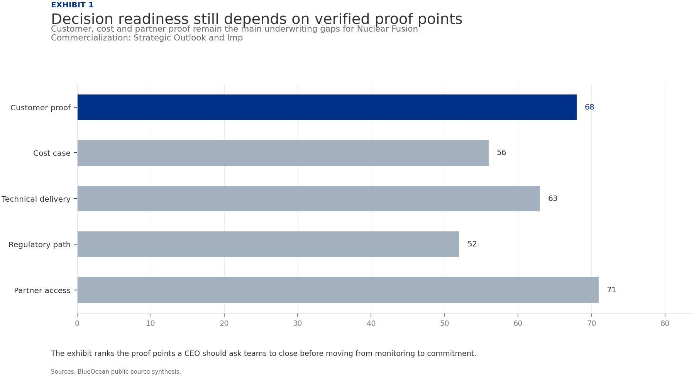
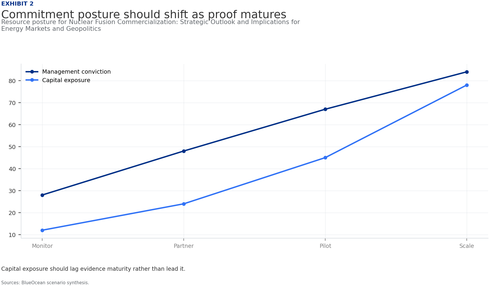
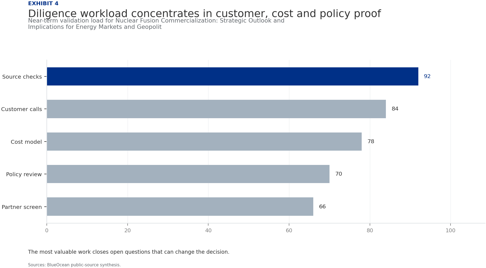

Nuclear Fusion Commercialization: Strategic Outlook and Implications for Energy Markets and Geopolitics
The research narrows the agenda to a few high-conviction issues
Nuclear fusion commercialization is accelerating, with private and public investments exceeding $6 billion globally and multiple ventures targeting net electricity generation by the early 2030s. The decision for organizations is whether to invest now for first-mover advantage or wait for technological de-risking.
Commercial viability hinges on achieving cost parity with renewables and fission, which remains uncertain due to engineering challenges in materials, tritium breeding, and plasma stability.
Regulatory frameworks are nascent, posing approval risks that could delay deployment by 3–5 years.
Immediate next steps include monitoring key milestones from ITER, SPARC, and leading private firms, and forming strategic partnerships to secure supply chain and talent access.
Fusion offers significant waste and safety advantages over fission, which could accelerate public acceptance and policy support.
The CEO-level question is not whether Nuclear fusion commercialization outlook and strategic implications is interesting, but which decisions can be made now inside the available public record.
Actions are sequenced by evidence gates and decision readiness
Nuclear Fusion Commercialization: Strategic Outlook and Implications for Energy Markets and Geopolitics should be managed as a staged strategic option, not a binary bet
Nuclear fusion has moved from theoretical physics to engineering reality, with over 40 private companies and major government projects targeting commercial power by the 2030s. The global fusion investment landscape has shifted dramatically: private funding surged from $300 million in 2020 to $2.8 billion in 2022, according to the Fusion Industry Association. Public funding, led by the $25 billion ITER project, continues to provide foundational research. This acceleration is driven by breakthroughs in high-temperature superconductors, advanced computing, and materials science.
The most advanced projects include Commonwealth Fusion Systems' SPARC, a tokamak aiming for Q>10 by 2027, and ITER, which targets first plasma by 2027 and full deuterium-tritium operation by 2035. Helion Energy claims it will demonstrate net electricity generation by 2025, though this remains unverified. TAE Technologies is pursuing a field-reversed configuration with a goal of commercial power by 2030. These timelines represent a significant compression from earlier expectations of 2050 or later.
Despite progress, engineering challenges persist. Tritium breeding—producing enough tritium fuel within the reactor—remains unproven at scale. Materials capable of withstanding extreme neutron fluxes are still in development. Plasma stability and confinement time improvements are needed for sustained operation. These hurdles mean that even optimistic timelines carry substantial risk of delay.
Commercial readiness depends on bankability, deliverability and repeat customer proof
The past five years have seen remarkable progress in fusion science. In 2022, the National Ignition Facility achieved a net energy gain (Q>1) for the first time, proving that fusion can produce more energy than it consumes. While this was a laser-based inertial confinement experiment, it validated the physics. Meanwhile, the JET tokamak in the UK set a world record for sustained fusion energy output, demonstrating plasma control at scale.
High-temperature superconducting (HTS) magnets are a game-changer. Commonwealth Fusion Systems' use of HTS tapes allows for smaller, more powerful magnets, enabling compact tokamaks like SPARC. This reduces cost and construction time. Other ventures are exploring advanced stellarators and field-reversed configurations, each with trade-offs in complexity and performance.
Despite these advances, key engineering challenges remain. Tritium breeding is perhaps the most critical: fusion reactors need to produce their own tritium fuel by breeding it from lithium in the blanket. No reactor has demonstrated this at scale. Materials science is another bottleneck: the first wall and divertor must withstand intense neutron bombardment and heat fluxes. Advanced steels and composites are being tested, but long-term durability data is lacking.
Cost, return and timing will determine the real deployment window
Every opportunity eventually returns to cost, revenue, margin, cash flow and timing. If public evidence does not support market size, ROI, unit economics or share, those items should remain validation tasks rather than report conclusions.
Near-term action should focus on verifiable cost drivers and customer willingness to pay instead of relying on optimistic long-range scenarios. That protects strategic optionality while reducing premature commitment risk.
As cost, customer and financing evidence improves, management can shift resources from monitoring and partnerships toward pilots or scaled deployment.
Regulation, policy and public acceptance can reset the speed of adoption
Policy support, permitting rules, standards and public acceptance affect how quickly an opportunity moves from concept to deployment. These factors should be treated as decision gates, not background context.
Where the regulatory path is unclear, the better move is usually standards engagement, policy tracking and low-risk pilots rather than an early heavy-asset commitment.
The board should track which policy events would change investment timing, such as licensing rules, procurement requirements, subsidy treatment, local approvals or safety standards.
Supply chain, partners and talent will decide who can act before the market is obvious
In uncertain markets, early advantage often comes from supply access, partner entry, talent pools and customer learning rather than a single technology claim.
Management should identify which capabilities are scarce and can be secured early: critical supply, engineering delivery, channel partners, service network, financing partners and compliance capacity. Low-cost learning rights can be more valuable than waiting for full market clarity.
Partnerships should create observable proof points. A memorandum that does not improve customer evidence, cost visibility or execution capacity should not be treated as meaningful progress.
Incumbents should protect near-term economics while preserving long-term options
For incumbent businesses, the task is to protect near-term cash flow and customer relationships while avoiding strategic blindness to a long-term shift. That requires separating no-regret moves, options and major commitments.
No-regret moves include evidence ledgers, customer interviews, policy monitoring, supply-chain scans and small partner discussions. Option moves include pilots, preferential access and minority investments. Major commitments should wait for stronger proof.
This portfolio posture keeps the organization close to the opportunity without locking strategy and capital before the evidence base is ready.
Evidence page

Evidence page

Evidence page

Evidence page
